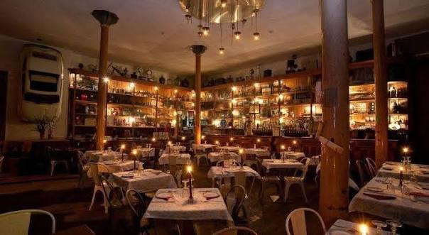
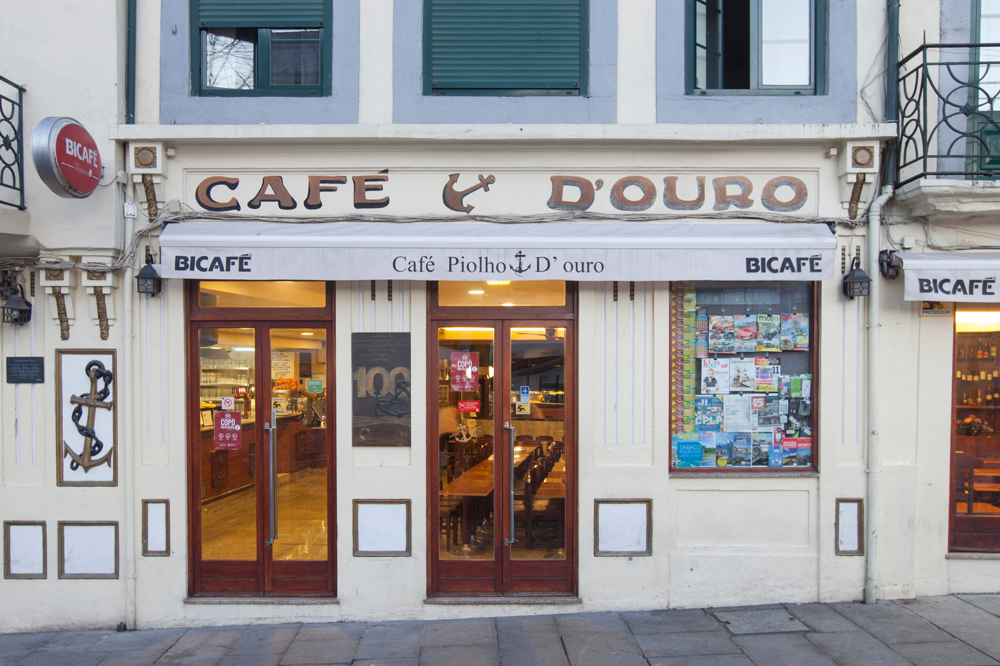
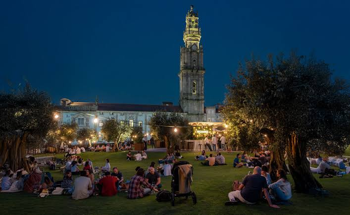

Porto Nightlife & Student Spots
Experience Porto’s legendary nightlife, from bustling bar streets near university hubs to rooftop parks and student traditions.

Nightlife HubGalerias de Paris & Cândido dos Reis
The beating heart of Porto’s nightlife, where crowds fill the streets moving between trendy cocktail bars, indie pubs, and retro clubs.
- Rua da Galeria de Paris, Porto
- Free street access | Drinks €2 – €7

Erasmus Meeting PointCafé Piolho
Historic university cafe operating since 1909, serving as the ultimate meeting point for Erasmus students to grab cheap beer and catch up before going out.
- Praça de Parada Leitão 45, Porto
- Beer €1.50 – €3

Outdoor ChillBase Porto
An open-air garden bar built on an elevated park with olive trees and wooden decks directly opposite Clérigos Tower, perfect for afternoon and sunset drinks.
- Passeio dos Clérigos, Porto
- Free entry | Drinks €3 – €8
Erasmus Local Tip
Pre-gaming (aquecimento) starts late in Porto! Meet up at Piolho or nearby student bars around 11:00 PM before heading to Galerias de Paris streets around midnight. Most major nightclubs don't get packed until after 2:00 AM!